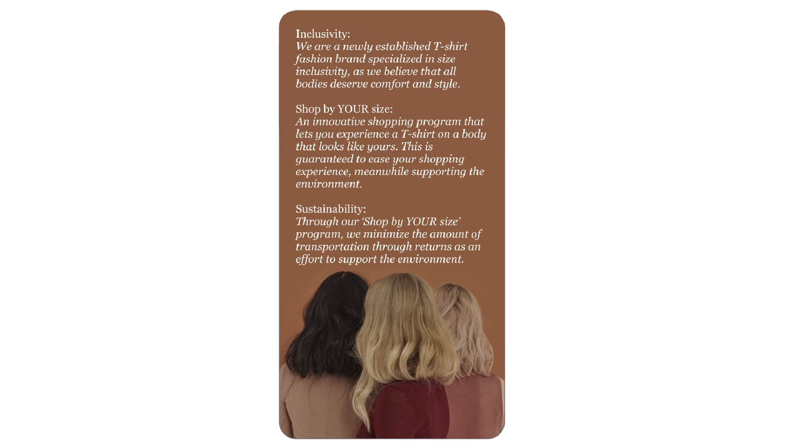
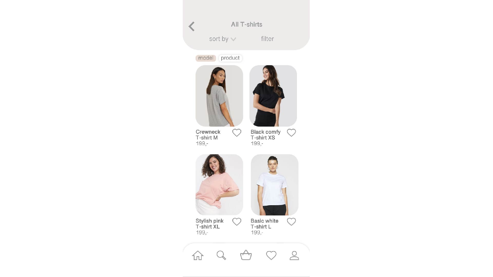
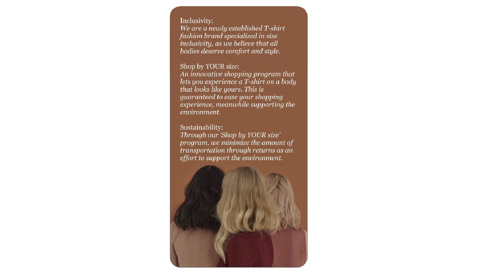
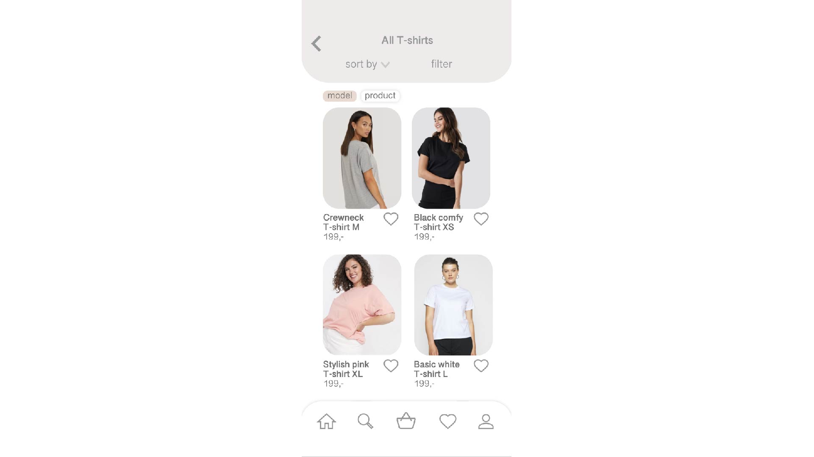

Endelig prototype
03.03.02 endelig prototype
Ud fra en idegenereringsproces udarbejdede jeg i denne opgave en endelig prototype af min webshop gennem programmet Adobe XD. Her havde jeg fokus på at gøre webshoppen så behagelig som muligt gennem både UI og UX designet.
 



Dette gjorde jeg ved at sætte fokus på de runde kanter, hvilket efterligner nyere mobile devices afrundende hjørner. UI-mæssigt giver dette webshoppen et mere æstetisk og sammenhængende look. Design valget har dog også en positiv indvirkning på User Experiencen, da runde hjørner er behageligere for øjet, og dermed gør det nemmere for hjernen at behandle information.
UX-mæssigt valgte jeg også at indføre en bundnavigation, da mobile devices er blevet større med tiden, hvilket gør det besværligere at nå op til toppen af skærmen, hvor navigationsbaren typisk er placeret. Herved placerede jeg navigationsbaren i bunden for at give brugeren den ultimative behaglige oplevelse på min webshop.